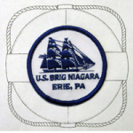
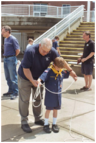
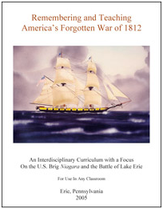
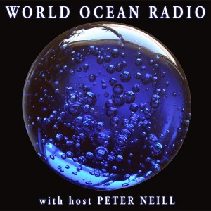

Below are educational resources and programs that are offered
U.S. Brig Niagara Patch Tour for Scouts
Boy Scouts, Girl Scouts, and Cub Scouts alike will enjoy this special tour of the Erie Maritime Museum. Tour packet includes admission to the Erie Maritime Museum and guided tour of U.S. Brig Niagara (subject to availability), a museum scavenger hunt, a special activities packet to take home, and a very special U.S. Brig Niagara patch. Contact Ed Tonkin for pricing and availability at 814.452.2744 ext. 229 or etonkin@flagshipniagara.org.
Sub Scouts, Ahoy!
In the course of this two-hour program Cub Scouts will complete all necessary activities to earn the Tying It Up badge:
* Tie a square knot, bowline, sheet bend, two half hitches, and a slip knot and learn how each knot is used.The program fee of $10 per Cub Scout includes: admission to the museum that day, all supplies needed as well as instruction by museum docents for Tying it Up Badge as specified by the Boys Scouts of America, U.S. Brig Niagara patch and instructional packet for knot-tying. One Den Leader is required and is admitted free with group; other accompanying adults admitted at the group rate of $7.00 and may purchase the patch for an additional fee. Contact 814.452.2744 ext. 219 to schedule. Subject to availability.
The War of 1812 - Living History
Designed for middle and high school students who already have a background in regional history or the history of the War of 1812, this Erie Maritime Museum field trip program allows students to experience aspects of the life of a sailor in Perry’s fleet. Students have hands-on opportunities to drill on the 32 pdr carronade, set the sail and learn to tie basic knots as part of their museum experience. Units on a sailor’s diet, clothing and language are also available. Minimum 4 hours necessary. Includes a guided tour of Niagara (when in port) and time to explore the exhibit hall. Contact 814.452.2744 ext. 219 to schedule. Subject to availability.
Talks and Presentations
The Flagship Niagara League and Erie Maritime Museum offer fun and informative educational presentations on the following topics:
* The Story of the U.S. Brig NiagaraOther topics may also be available, contact 814.452.2744 ext. 219 for more information.
School Partnerships- U.S. Brig Niagara
The U.S. Brig Niagara offers the perfect laboratory for developing young minds, bodies and souls. Our programs are tailored to meet the objectives of partners such as athletic clubs, Sea Scouts or other maritime groups and educational institutions ranging from high school to college. Daily life in a sailing ship offers an appealing place for everyone to work toward common goals, where students fit the same mold that shapes them into efficient workers and where they speak the same historic language common on-board the ship. Beneath the sails and within a square-rigger, the crew binds together as shipmates. They grow trusting and respectful of each other, their leaders and the ship. The supportive leadership of skilled and well-trained officers insures that the bonding experience occurs quickly and has lasting effect. The formative days during the first week on-board present many new challenges but together, the students share in the experience.
Sea Bag Program
For more information on outreach and educational opportunities, contact our Marketing and Development Coordinator by phone 814.452.2744 or email info@flagshipniagara.org.
Educational Resources - Remembering and Teaching America’s Forgotten War of 1812
The Erie Maritime Museum presents its interdisciplinary curriculum with lesson plans targeted to a broad scope of Middle School students (grades 5 -9). Lessons and activities are easily tailored to the Elementary and Secondary Levels as well and curriculum includes a crosswalk to the Pennsylvania Academic Standards and may be used to meet academic standards in all areas. Curriculum is supplemented by a DVD with 45 minutes of supplemental videos for classroom viewing, which can be purchased for $5.00 through the Erie Maritime Museum Gift Shop by calling 814.452.2744 ext. 208 (additional $5.00 to ship).
Free Online Classroom Resources for the War of 1812
In addition to the tours and programs offered by the Erie Maritime Museum, classroom teachers may enjoy using some of the online resources offered by some of our friends and partners.
World Ocean Radio
World Ocean Radio is a weekly audio feature for web and podcast listeners, distributed worldwide through community and college radio stations and educational partners. Each week World Ocean Radio provides unique, five-minute commentary from longtime host Peter Neill, who offers a unique perspective on important and relevant ocean issues from science and education to advocacy and exemplary projects. To hear this week’s commentary, visit them online at www.WorldOceanObservatory.org/world-ocean-radio. The World Ocean Observatory website is a wealth of information for educators. Subscription services and online exhibits are free.
